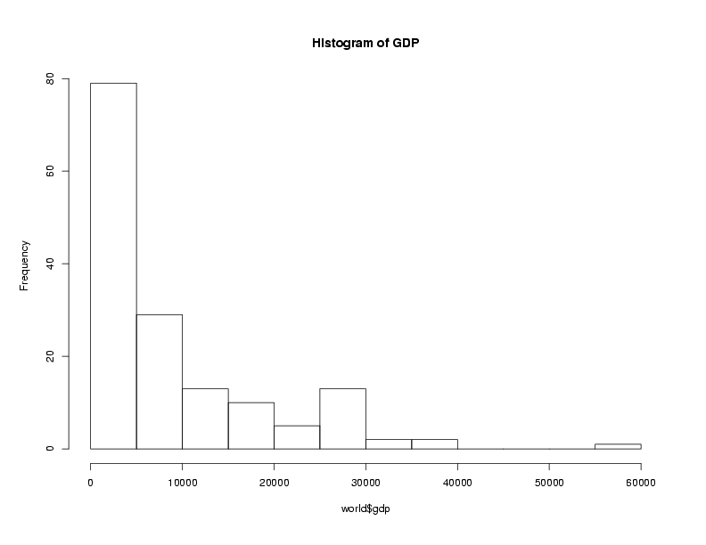
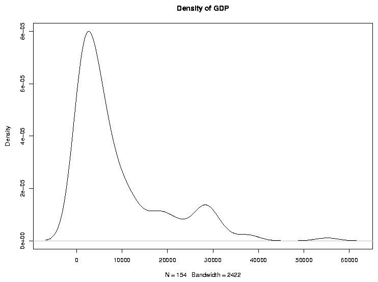
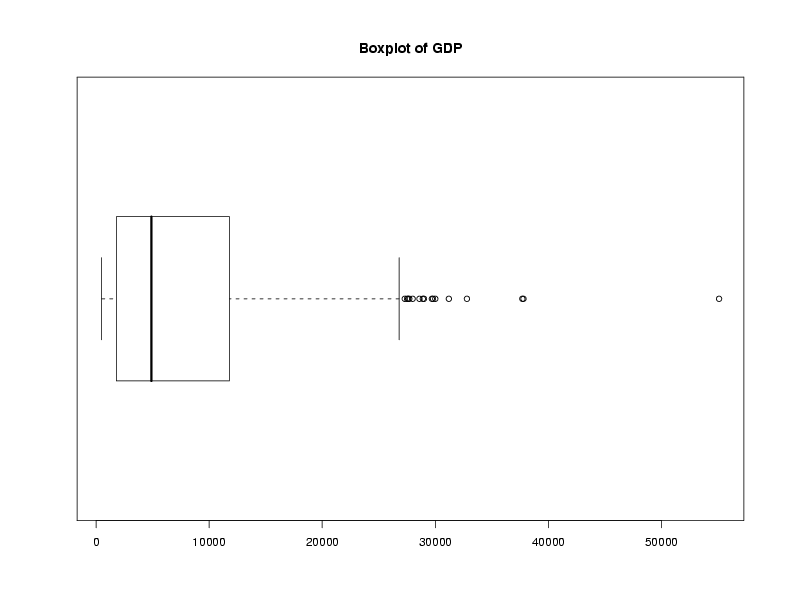

Data Frames
1 More on Data Frames
Notice that if you want to extract more than one column of a data frame,
you need to use single brackets, not double:
> temps[c('min','max')]
min max
1 50.7 59.5
2 52.8 55.7
3 48.6 57.3
4 53.0 71.5
5 49.9 69.8
6 47.9 68.8
7 54.1 67.5
8 47.6 66.0
9 43.6 66.1
10 45.5 61.7
> temps[[c('min','max')]]
Error in .subset2(x, i, exact = exact) : subscript out of bounds
-
If you want to work with a data frame without having to constantly
retype the data frame's name, you can use the with function.
Suppose we want to convert our minimum and maximum temperatures to
centigrade, and then calculate the difference between them. Using
with, we can write:
> with(temps,5/9*(max-32) - 5/9*(min-32))
[1] 4.888889 1.611111 4.833333 10.277778 11.055556 11.611111 7.444444
[8] 10.222222 12.500000 9.000000
which may be more convenient than typing out the data frame name
repeatedly:
> 5/9*(temps$max-32) - 5/9*(temps$min-32)
[1] 4.888889 1.611111 4.833333 10.277778 11.055556 11.611111 7.444444
[8] 10.222222 12.500000 9.000000
-
Finally, if the goal is to a add one or more new columns to a data frame, you
can combine a few operations into one using the transform function.
The first argument to transform is the name of the data frame that
will be used to construct the new columns. The remaining arguments to transform
are name/value pairs describing the new columns. For example, suppose we wanted
to create a new variable in the temps data frame called range,
representing the difference between the min and max values for
each day. We could use transform as follows:
> temps = transform(temps,range = max - min)
> head(temps)
day min max range
1 1 50.7 59.5 8.8
2 2 52.8 55.7 2.9
3 3 48.6 57.3 8.7
4 4 53.0 71.5 18.5
5 5 49.9 69.8 19.9
6 6 47.9 68.8 20.9
As can be seen, transform returns a new data frame like
the original one, but with one or more new columns added.
2 Reading Data Frames from Files and URLs
While creating a data frame the way we just did is very handy for
quick examples, it's actually pretty rare to enter a data frame
in that way;
usually we'll be reading data from a file or possibly a URL. In
these cases, the read.table function (or one of its' closely
related variations described below) can be used. read.table tries
to be clever about figuring out what type of data you'll be using, and
automatically determines how each column of the data frame should be
stored. One problem with this scheme is has to do with a special type of
variable known as a factor. A factor in R is a variable that is stored as
an integer, but displayed as a character string.
By default, read.table will automatically turn all the character
variables that it reads into factors.
You can recognize factors
by using either the is.factor function or by examining the
object's class, using the class function. Factors are very useful
for storing large data sets compactly, as well as for statistical modeling
and other tasks, but when you're first working with R they'll most likely
just get in the way. To avoid read.table from doing any factor
conversions, pass the stringsAsFactors=FALSE argument as shown in the examples
below.
By default, R expects there to be at least one space or tab between each
of the data values in your input file; if you're using a different character
to separate your values, you can specify it with the sep= argument.
Two special versions of read.table are provided to handle two
common cases: read.csv for files where the data is separated by
commas, and read.delim when a tab character is used to separate
values. On the other hand, if the variables in your input data occupy
the same columns for every line in the file, the read.fwf can be
used to turn your data into a data frame.
If the first line of your input file contains the names of the variables in
your data separated with the same separator used for the rest of the data,
you can pass the header=TRUE argument to read.table and
its variants, and the variables (columns) of your data frame will be
named accordingly. Otherwise, names like V1, V2, etc. will
be used.
As an example of how to read data into a data frame, the URL
http://www.stat.berkeley.edu/classes/s133/data/world.txt
contains information about literacy, gross domestic product, income and
military expenditures for about 150 countries. Here are the first few
lines of the file:
country,gdp,income,literacy,military
Albania,4500,4937,98.7,56500000
Algeria,5900,6799,69.8,2.48e+09
Angola,1900,2457,66.8,183580000
Argentina,11200,12468,97.2,4.3e+09
Armenia,3900,3806,99.4,1.35e+08
(You can use your favorite browser to examine a file like this, or you
can use R's download.file and file.edit functions to download
a copy to your computer and examine it locally.)
Since the values are separated by commas, and the variable names
can be found in the first line of the file, we can read the data into
a data frame as follows:
world = read.csv('http://www.stat.berkeley.edu/classes/s133/data/world.txt',header=TRUE,stringsAsFactors=FALSE)
Now that we've created the data frame, we need to look at some ways to
understand what our data is like. The class and mode of objects in R is
very important, but if we query them for our data frame, they're not
very interesting:
> mode(world)
[1] "list"
> class(world)
[1] "data.frame"
Note that a data frame is also a list. We'll look at lists in more
detail later.
As we've seen,
we can use the sapply function to see the modes of
the individual columns. This function will apply a
function to each element of a list; for a data frame these elements
represent the columns (variables), so it will do exactly what we want:
> sapply(world,mode)
country gdp income literacy military
"character" "numeric" "numeric" "numeric" "numeric"
> sapply(world,class)
country gdp income literacy military
"character" "integer" "integer" "numeric" "numeric"
You might want to experiment with sapply using other functions
to get familiar with some strategies for dealing with data frames.
You can always view the names of the variables in a data frame by using
the names function, and the size (number of observations and
number of variables) using the dim function:
> names(world)
[1] "country" "gdp" "income" "literacy" "military"
> dim(world)
[1] 154 5
Suppose we want to see the country for which military spending is the
highest. We can use the which.max function that we used
before
but extra care is needed to make sure we get the piece of the data frame
we want. Since each country occupies one row in the data frame, we want
all of the columns in that row, and we can leave the second index of the
data frame blank:
>
> world[which.max(world$military),]
country gdp income literacy military
142 USA 37800 39496 99.9 3.707e+11
The 142 at the beginning of the line is the row number of
the observation. If you'd like to use a more informative label for the
rows, look at the row.names= argument in read.table and
data.frame, or use the assignment form of the row.names
function if the data frame already exists.
These types of queries, where we want to find observations from a data frame
that have certain properties, are so common that R provides a function called
subset to make them easier and more readable. The subset
function requires two arguments: the first is a data frame, and the second is
the condition that you want to use to create the subset.
An optional third argument called select= allows you to specify which
of the variables in the data frame you're interested in.
The return value from subset is a data frame, so you can use it anywhere
that you'd normally use a data frame.
A very attractive
feature of subset is that you can refer to the columns of a data frame directly
in the second or third arguments; you don't need to keep retyping the data frame's name,
or surround all the variable names with quotes.
Suppose we want to find those countries whose literacy rate is below
20%. We could use the subset function like this:
> subset(world,literacy < 20)
country gdp income literacy military
22 Burkina Faso 1100 1258 12.8 64200000
88 Mali 900 1024 19.0 22400000
102 Niger 800 865 14.4 33300000
One other nice feature of the select= argument is that it converts
variable names to numbers before extracting the requested variables, so you
can use "ranges" of variable names to specify contiguous columns in a
data frame. For example, here are the names for the world data
frame:
> names(world)
[1] "country" "gdp" "income" "literacy" "military"
To create a data frame with just the last three variables, we could
use
> subset(world,select=income:military)
If we were interested in a particular variable, it would be useful to
reorder the rows of our data frame so that they were arranged in descending
or ascending order of that variable. It's easy enough to sort a variable
in R; using literacy as an example, we simply call the sort
routine:
> sort(world$literacy)
[1] 12.8 14.4 19.0 25.5 29.6 33.6 39.3 39.6 41.0 41.1 41.5 46.5 47.0 48.6 48.6
[16] 48.7 49.0 50.7 51.2 51.9 53.0 54.1 55.6 56.2 56.7 57.3 58.9 59.0 61.0 64.0
[31] 64.1 65.5 66.8 66.8 67.9 67.9 68.7 68.9 69.1 69.4 69.8 70.6 71.0 73.6 73.6
[46] 74.3 74.4 75.7 76.7 76.9 77.0 77.3 78.9 79.2 79.4 79.7 80.0 81.4 81.7 82.4
[61] 82.8 82.9 82.9 84.2 84.3 85.0 86.5 86.5 87.6 87.7 87.7 87.7 87.9 87.9 88.0
[76] 88.3 88.4 88.7 89.2 89.9 90.0 90.3 90.3 90.4 90.9 91.0 91.0 91.6 91.9 91.9
[91] 92.5 92.5 92.6 92.6 92.7 92.9 93.0 94.2 94.6 95.7 95.8 96.2 96.5 96.8 96.8
[106] 96.9 96.9 97.2 97.2 97.3 97.7 97.7 97.8 98.1 98.2 98.5 98.5 98.7 98.7 98.8
[121] 98.8 99.3 99.3 99.4 99.4 99.5 99.5 99.6 99.6 99.6 99.7 99.7 99.7 99.8 99.9
[136] 99.9 99.9 99.9 99.9 99.9 99.9 99.9 99.9 99.9 99.9 99.9 99.9 99.9 99.9 99.9
[151] 99.9 99.9 99.9 99.9
To reorder the rows of a data frame to correspond to the sorted order of one of
the variables in the data frame, the order function can be used.
This function returns a set of indices which are in the proper order to
rearrange the data frame appropriately. (Perhaps the easiest way to understand
what the order function is to realize that x[order(x)] is
the same as sort(x).)
> sworld = world[order(world$literacy),]
> head(sworld)
country gdp income literacy military
22 Burkina Faso 1100 1258 12.8 64200000
103 Niger 800 865 14.4 33300000
89 Mali 900 1024 19.0 22400000
29 Chad 1200 1555 25.5 101300000
121 Sierra Leone 500 842 29.6 13200000
14 Benin 1100 1094 33.6 96500000
To sort by descending values of a variable, pass the decreasing=TRUE
argument to sort or order.
When you're first working with a data frame, it can be helpful to get some
preliminary information about the variables. One easy way to do this is to
pass the data frame to the summary function, which understands what
a data frame is, and will give separate summaries for each of the variables:
> summary(world)
country gdp income literacy
Length:154 Min. : 500 Min. : 569 Min. :12.80
Class :character 1st Qu.: 1825 1st Qu.: 2176 1st Qu.:69.17
Mode :character Median : 4900 Median : 5930 Median :88.55
Mean : 9031 Mean :10319 Mean :81.05
3rd Qu.:11700 3rd Qu.:15066 3rd Qu.:98.42
Max. :55100 Max. :63609 Max. :99.90
NA's : 1
military
Min. :6.500e+06
1st Qu.:5.655e+07
Median :2.436e+08
Mean :5.645e+09
3rd Qu.:1.754e+09
Max. :3.707e+11
Another useful way to view the properties of a variable is with the stem
function, which produces a text-base stem-and-leaf diagram. Each observation
for the variable is represented by a number in the diagram showing that
observation's value:
> stem(world$gdp)
The decimal point is 4 digit(s) to the right of the |
0 | 11111111111111111111111111112222222222222222222223333333333344444444
0 | 55555555555666666666677777778889999
1 | 000111111223334
1 | 66788889
2 | 0022234
2 | 7778888999
3 | 00013
3 | 88
4 |
4 |
5 |
5 | 5
Graphical techniques are often useful when exploring a data frame. While we'll
look at graphics in more detail later, the functions boxplot,
hist, and plot combined with the density function
are often good choices. Here are examples:
> boxplot(world$gdp,main='Boxplot of GDP')
> hist(world$gdp,main='Histogram of GDP')
> plot(density(world$gdp),main='Density of GDP')



File translated from
TEX
by
TTH,
version 3.67.
On 30 Jan 2011, 19:56.